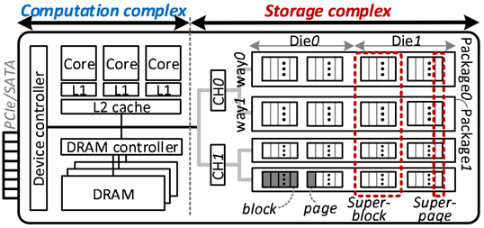
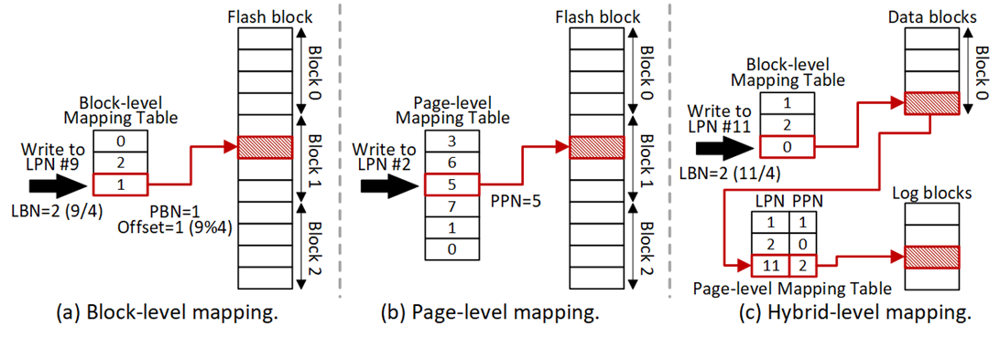

Introduction to SSD
SSDs have become major storage media in modern computing systems. The figure below illustrates the SSD internal architecture, which consists of a computation complex and a storage complex.

The computation complex consists of embedded ARM cores, internal DRAM, and device controllers. Specifically, multiple cores are allocated to flash firmware that controls all I/O services and address translations within an SSD. In addition, the device controller fetches requests from the host and sends responses back via a high-performance communication protocol (e.g., NVMe). SSDs employ embedded DRAM, which stores the address mapping table and I/O queues. To leverage DRAM performance, SSD also buffers the data of requests in DRAM, which hides the long latency imposed by the underlying storage media, namely the flash.
The storage complex contains multiple flash packages, each containing multiple dies, which are connected to the interconnection buses, referred to as channel. A set of flash packages across different channels can simultaneously operate. To leverage such parallelism, the flash firmware spreads a host request over multiple dies that have the same offset address but exist across different channels. Each set of flash dies (or packages) is called a way. A flash die comprises hundreds to thousands of blocks, each containing hundreds of pages. A group of multiple physical pages and blocks that span over all internal channels or ways is referred to as superpage or superblock, respectively. This organization poses a high SSD internal parallelism, thus achieving superb I/O throughput.
The flash supports read and write operations at page granularity. However, due to the physical characteristics, the whole flash block must be erased before writing any page in that block, making flash unsupportable for in-place updates. To address the limitation, the SSD constructs an indirection layer called the flash translation layer (FTL), which maintains a mapping table to record the mapping between the host logical address (LPN) and its corresponding flash physical address (PPN). For an overwrite, the data is written to a pre-erased free block. Subsequently, FTL updates the mapping of the new flash page and invalidates the stale flash page. Depending on the mapping granularity, the FTL mapping schemes can be divided into three categories: block-level, page-level, and hybrid-level mapping, as illustrated in the following figure.

-
Block-level mapping: In block-level mapping, the LPN is divided into a logical block number (LBN) and a page offset. A block-level mapping table uses the LBN to find the physical block (i.e., PBN) that includes the requested page, while the page offset is used to locate the page in the corresponding block. Due to such a fixed mapping, the page offsets of the logical and physical blocks should be identical, therefore, every overwrite to the same logical page incurs a block-level copy operation. That is, all the data in the corresponding block as well as the new data have to be written into another empty block, resulting in poor overwrite performance.
-
Page-level mapping: The page-level scheme maps the LPN directly to any PPN by maintaining a logical-physical mapping table (i.e., page-level mapping table in Figure (b)). Although this scheme improves performance with flexible address translation, the mapping table occupies huge amounts of DRAM.
-
Hybrid-level mapping: To achieve a balance between performance and DRAM consumption, several hybrid-level mapping schemes are proposed. Most of them use a log block mechanism to store updates. Specifically, flash blocks are divided into data blocks and log blocks. Data blocks represent ordinary storage space, while log blocks are used for storing overwrites. For translating addresses, these schemes maintain a block mapping table for the data blocks and a page mapping table for the log blocks, which consume less DRAM than page-level mapping. When an overwrite request arrives, the new data of the request is written to the log block instead of being stored in the original location, thus avoiding the heavy block copy operation in the block-level mapping. The mapping scheme also determines the specific association between data blocks and log blocks, such as 1-to-1 or N-to-N.
In page-level mapping scheme, when overwrites exhaust all free blocks, garbage collection (GC) is triggered to reclaim the used blocks where the SSD selects victim blocks, moves all valid pages to a new free block, and then erases it. On the other hand, in hybrid-level mapping scheme, GC is replaced by the operations of merging data blocks and log blocks, as well as recycling log blocks. More specifically, when log blocks are exhausted, the SSD reclaims these blocks by merging them with the associated data blocks. During such merge process, pages are migrated into new blocks and multiple blocks are erased, thereby incurring latency spike.